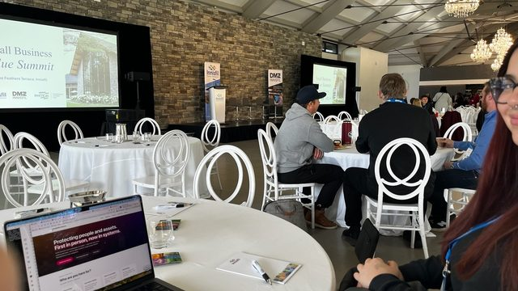
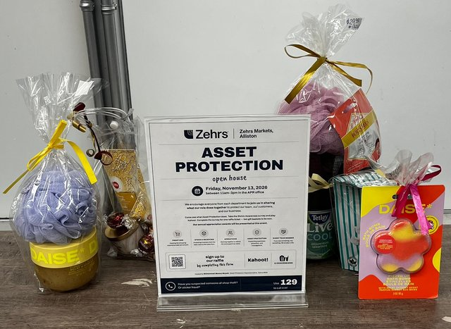

Blog
Mid-November: the summit, and the business we're building.

On Thursday, November 12, Alex and I spent the afternoon at the Small Business Value Summit at Three Feathers Terrace in Innisfil, hosted by the Town of Innisfil's economic development team. Two talks carried the day: David Holmes from MNP on what makes a business valuable, and Judith Pineault, who built and sold Eastern Fluid Power, on building a business that gives you options.
Holmes kept it simple: a business is worth its normalized earnings times a multiple, and the multiple is a measure of risk. The higher the multiple, the lower the risk. Recurring revenue, documented systems, and a business that doesn't depend on its owner push it up. One big customer, one key person, and messy books push it down. In his example, half a turn of the multiple was worth about $300,000.
Judith put numbers on it. The average small business in Ontario sold for about 2.2 times earnings last year, most at two to three times. Her benchmarks for a business worth owning: grow 10 to 15 percent a year, keep 10 to 15 percent on the bottom line, hold three months of cash, no single customer over 15 to 20 percent of revenue, and aim for 60 percent recurring revenue. Then the test she left us with: could you walk away for 90 days, and would the business keep running, profitably, and growing?
She also told the story of a couple who built a custom building firm over 30 years, booked out two to three years, ready to sell, and when she asked what they would do next, the answer was "I don't know." The exit needs a next chapter, not just a price.
That's the part Alex and I brought home for MOLEX. We're building it to be valuable from day one: recurring care instead of one-off projects, systems written down so the work doesn't live in one person's head, and clean books. The goal is a business that passes the 90-day test, grows a little every year, and that someone would one day want to buy, because we built it that way on purpose. Not an exit plan. A standard.
Short version: we went to learn how a business is valued, and came back with a blueprint for building one. The rest of November is putting it into MOLEX's systems, one documented process at a time.
Blog
November 2026: the month the portfolio went live.

November was the month this site stopped being a project and became a place. I registered mohammedmounir.ca on November 7, and over November 7–9 it went live — Cloudflare and security headers, analytics, the Community & policing page, floating logos, and mobile polish — then through a full expert test and fix batch before the November 11 push.
The same weekend, Anwar Bonimy and I recorded the first two episodes of The Shielded Truth on Saturday, November 7 — episode 1 slated for November 11 and episode 2 for November 12. And on Tuesday, November 10, after the OPP Civilian Data Entry and Technology Disclosure Unit information session, the police path came into focus: civilian entry first, auxiliary second.
The rest of the month is still in motion as I write this: Doughnut with APR on Thursday, November 12 and the APR Open House on Friday, November 13 at Zehrs 509, the Small Business Value Summit in Innisfil on November 12 with Alex for MOLEX, and the LPF webinar on Wednesday, November 18. Seneca CPA is deferred for the January term, and Momospeare is pivoting from the GTA marathon to Vice City chaos with Alex. Today, November 11, is Mom, Noor, and Lubna’s birthday.
Short version: the foundation is live, the direction is set, and the work now is follow-through.